Getting started with Opera skinning
Introduction
This tutorial will teach you the basics of how to skin Opera. Sounds painful, doesn't it? Never fear - I'm not advocating doing any kind of injury to your beloved browser; I am referring to customizing its look and feel by altering the images that comprise the buttons, toolbars, backgrounds, and other visual elements you see in the browser. Bear in mind that all these images are contained in a package of files present on your computer's hard drive. In this article we will show you how to locate that package on your computer, what the default skin package contains, how to pack and unpack it, and then give you some examples of how to make simple changes to your browser's skin, such as replacing button graphics and background tiles. The article is structured as follows:
- Locating the skin files
- Unpacking / packing skins
- Standard skin folder/file list
- Example 1: replacing a toolbar button
- Example 2: adding a custom toolbar button
- Example 3: adding a background image to Speed Dial
Locating the skin files
Before you start editing a skin you first need to locate the actual files on your hard drive. This location varies depending on the operating system you are running Opera on, and the skin you want to edit - the default skin's location differs from that of the alternative skin packages you can download from my.opera.com. The following list shows you the location of the different skin package files on the different operating systems:- Windows:
- The standard skin can be found in
Skindirectory in Opera's install directory - in most cases this should beC:\Program files\Opera\Skin. - Downloaded skins are stored in
profile\Skin. To figure out where theprofiledirectory is located, you can check out "Help > About Opera". As a shortcut, you should also be able to access that directory by selecting "Start > Run" and entering%APPDATA%\Opera\profile\Skin.
- The standard skin can be found in
- Linux/Unix:
- The standard skin can be found in
/usr/share/opera/skin. - Downloaded skins are stored in
~/.opera/skin. Note that.operais a hidden directory therefore you might have to type the path manually.
- The standard skin can be found in
- Mac OS X:
- The standard skin can be found in the
applicationpackage, usually in/Applications/Opera.app/Contents/Resources/Skin(basically, right click on the Opera program icon inside theApplicationsfolder, Ctrl-click on it, and selectShow Package Contentsto access the Opera application's internal files.) - Downloaded skins are stored in
~/Library/Preferences/Opera Preferences/Skin.
- The standard skin can be found in the
Opera ships with two skins - standard_skin.zip, which is the Standard skin, and a native skin, either called windows_skin.zip or mac_skin.zip. The native skin doesn't contain any images; it instead uses the ones from the standard skin. For downloaded skins the filename is usually similar to the skin's name.
Unpacking / packing skins
Skins are packed as zip files (.zip). When Opera applies a skin, it unpacks and loads the required images from the package on the fly - each image is only loaded once, even if it is called more than once.
Before you can start editing a skin you have to unpack it using compression software like WinZip or 7zip. You don't have to unpack it to any specific location as you'll have to pack it again later anyway. Try it now - find the standard Opera skin and unpack it. The folder structure of this package (as seen in Opera 9.2x) is discussed in the next section.
After editing the skin you have to pack the files again, so they can be loaded by Opera. You do this by navigating to the folder containing skin.ini and the image files/folders, selecting all the contents of this folder and adding them to a new zip file.
To load the skin in Opera you have to put the zip file into the folder for downloaded skins, mentioned above, then start Opera and select "Tools > Appearance" - you'll then be able to select your skin from the list of skins that appears there. Note that if skin.ini is not in the root directory of the zip file, Opera will give you the error message "Unable to continue. Please select a skin made for your version of Opera"!
Standard skin folder/file list
Each skin package contains a configuration file callled skin.ini that dictates how the images are used inside the skin, and the images themselves. These images are usually organized inside a series of folders, the structure of which differs from package to package. You can basically structure the images and folders inside a skin package any way you want, as long as the paths to the images are correct inside the skin.ini file. Skin.ini is edited in the examples at the end of this article, and I'll cover how to manipulate skin.ini in detail in future articles, to be published soon.
If you want to edit an existing skin it's useful to know where the images that comprise the different parts of Opera's interface are located. The following table shows what images all the different folders in the default Opera skin contain - it is valid for the standard skin included in Opera 9.2 and might be valid for some skins you can download from my.opera.com but it won't apply to all of them. If the skin you're trying to edit has a different folder structure you can usually figure out where the files you're looking for are located by looking at the folder names or previewing the image files in an image viewer.
Note that the folder structure for Opera 9.5 beta is similar to 9.2x, but has a few additions. We'll keep to the basic 9.2x set here because the folder structure in the default skin for 9.5 is expected to change significantly in the final release version. We'll give you the lowdown on that when the final release occurs, so watch this space!
| folder | description | |
|---|---|---|
| border/ | Contains border graphics for toolbar borders, separators in dialog boxes, and borders around toolbar buttons. | |
| buttons/ | Contains all the toolbar button images - these are referenced in the Boxes and Images sections in the Skin.ini file. | |
| caption/ | Contains the minimize, restore and close button graphics that reside at the top right of the menu bar (top left if you are using a Mac.) | |
| checkbox/ | Contains checkbox graphics. | |
| contacts/ | Contains contact icon graphics. | 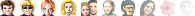 |
| dialog/ | Contains the outer background for dialog boxes. | 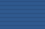 |
| dialog_button_border/ | Contains shadows for push buttons in dialog boxes (not in use in version 9.2 and later): | |
| dialog_images/ | Contains icons for several messages, ie the ones found in alert/dialog boxes. | |
| dialog_page/ | Contains graphics for the border and shadows around the inner background of dialog boxes. | |
| drop_insert/ | Contains the image that appears as the target when you are dragging and dropping a button. | |
| edit/ | Contains edit field graphics for the address field, search fields, treeviews, listboxes, and multiline edit fields. These are difficult to change because some unchangeable parts are applied by the operating system. | 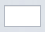 |
| header_button/ | Contains graphics for headers, for example those found on top of mail or preference treeviews. | 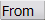 |
| icons/ | Contains most of the icons, with the exception of those described elsewhere in the table. | |
| notifier/ | Contains the background image for popup notifiers and the inline search popup. | 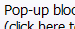 |
| pagebar_close_button/ | Contains the graphics for the close buttons on the tabs. | |
| panel_toggle/ | Contains the panel toggle graphics. | |
| progress/ | Contains several progress indicator graphics. | |
| push_button/ | Contains the basic graphics for OK, Cancel, and similar buttons in dialog boxes, and dropdown buttons in dropdown fields and scrollbars. | 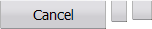 |
| push_default_button/ | Similar to the one above but for the default button, thus the one that gets selected when you press Enter. | |
| radio_button/ | Contains radio button graphics. | |
| scrollbar/ | Contains the graphic for the scrollbar background and the arrows for scrollbar dropdowns and dropdown buttons in dropdown fields. | |
| scrollbar_knob/ | Contains the scrollbar knob images. | |
| selector_button/ | Contains the background graphic that goes around toolbar buttons, panel selector buttons and the panel toggle (for the .hover, .selected and .pressed states). |
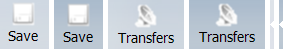 |
| smilies/ | Contains all the emoticon graphics. | |
| speeddial/ | Contains the graphics for the speed dial thumbs, including icons, the separator for the speed dial search area, the overlay with shadows for the speed dial configuration dialog and the overlay without shadows for systems that don't support alpha transparency. | 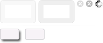 |
| startup_dialog/ | Contains the graphics for the v7 startup dialog header (not used by the default skin anymore.) | |
| tab_button/ | Contains graphics for tab buttons on the tab bar and in dialog boxes. | 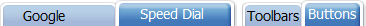 |
| tab_button_bottom/ | Contains hanging tab buttons to use when the tab bar is displayed at the bottom of the browser window. | 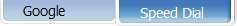 |
| toolbar_button/ | Contains graphics for the v7 toolbar button background - not in use anymore. | |
| trust_and_security_button/ | Contains graphics for the area around the fraud protection/security buttons inside the address field (green in version 9.5.) | |
| window/ | Contains the general background image for all the toolbars - exchanging this image is the easiest way to personalize your Opera skin. |
Now I've taken you through the standard Opera skin package structure, I'll walk you through a few examples that demonstrate how to replace default button and background images in this package, and add a custom image for a new toolbar button.
Example 1: replacing a toolbar button
In this example you'll replace the Reload image with the one shown in Figure 1.
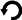Figure 1: A new custom Reload button
First of all, unpack the standard skin archive, as explained earlier. As the image you want to replace is a toolbar button, it should be located in the buttons/ folder - check that directory for a filename that could be the image you're looking for. You should find reload.png fairly easily.
Now replace the old reload.png with the one above (you could of course use your own custom image instead, if you wish).
To use the edited skin with Opera it has to be packed again. Go up a level so you're in the root of the folder containing skin.ini, select all files and add them to a new zip archive - name the zip file something memorable.
Now put the resulting zip file into Opera skin directory, restart Opera and select the Tools > Appearance menu option - you should see your zip file name in the skin list. Select it, and the Opera skin should now contain the new reload button, as shown in Figure 2.
Figure 2: Opera with the custom Reload button added.
Example 2: adding an icon to a custom toolbar button
Opera gives you the ability to add custom buttons to any toolbar. Those buttons can use any images already in the skin, but often there isn't an appropriate button available, so you'll want to add your own image to the skin.
In this example you'll first add a custom button to your toolbars and then apply an image to that button. This example doesn't have all the details that example 1 has so you might want to read and try that one first, if you haven't done so already.
To add the button click here, click OK in the dialog that appears and drag'n'drop the button to any toolbar. It should currently appear as shown in Figure 3.
The button link above already applies the image name "Next page" to the new button - we'll have to add an image for that name to the skin later on.
Figure 3: The new button without any image applied.
Next, unpack the skin like you did in example 1 and navigate to the buttons/ directory - that's the most logical place to put the new image. Now of course you need an image to be used for that button - a suitable image can be found in Figure 4.
Figure 4: The custom next tab button graphic.
Name that image nextpage.png and save it in the buttons/ directory.
There's a bit more to be done in this example - the image currently won't display when the skin is packed and loaded because it isn't linked to a button name in skin.ini. To do this, we need to add a line associating the image with the button name inside skin.ini. Open skin.ini in a text editor and scroll down to the [Images] section. The lines in this section are in the form Image name = path/to/image.png - as you'd logically expect, the path is relative to the location of skin.ini.
Add the following line just below [Images] to associate your custom image with your custom button:
Next page = buttons/nextpage.png
Save the changes and close the text editor, then pack the files and put the zip file into Opera's skin directory as discussed before. Now restart Opera and select the skin as before - The toolbar button you added at the beginning of this example should now have an icon, as shown in Figure 5.
Figure 5: The new button with a custom image applied.
Example 3: adding a background image to Speed Dial
In this example you'll replace the white background on the Speed Dial page with the image seen in Figure 6 - it'll be tiled so that it covers the whole page.
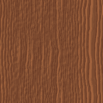Figure 6: A custom background tile for the speed dial page.
Again you should start by unpacking the skin. As you want to add an image to speed dial, put the above image in the speeddial/ directory (name it speeddialbackground.png.)
Next open skin.ini in a text editor. The background of speed dial is controlled by the [Speed Dial Widget Skin] section. By default this section should look like this:
[Speed Dial Widget Skin]
Padding Left = 1
Padding Top = 1
Padding Right = 1
Padding Bottom = 1
Border = 1
Border Color = #bec2cb
Color = #000000
Text Color = #000000To be able to use a background image you need to start by setting the section Type to BoxTile - the Type specifies that the image should be tiled to cover the whole screen. Set this by adding the following line to the top of the section, just below [Speed Dial Widget Skin]:
Type = BoxTileNow you've told Opera how to fill the space available with a tiled image, but you haven't told it what image to be used! This is easily remedied by adding the following line, just below the first line you added:
Tile Center = speeddial/speeddialbackground.pngspeeddial/speeddialbackground.png; the Tile Center declaration dictates that the image shouldn't be repeated in just one direction (vertically or horizontally) - it should tile in both directions to fill all the available space.
The final updated section should look like this:
[Speed Dial Widget Skin]
Type = BoxTile
Tile Center = speeddial/speeddialbackground.png
Padding Left = 1
Padding Top = 1
Padding Right = 1
Padding Bottom = 1
Border = 1
Border Color = #bec2cb
Color = #000000
Text Color = #000000Save the changes and close the text editor.
Now pack the files and put the zip file into Opera's skin directory and select the skin. Your speed dial pages should now have a custom wood background instead of being plain white, as shown in Figure 7.
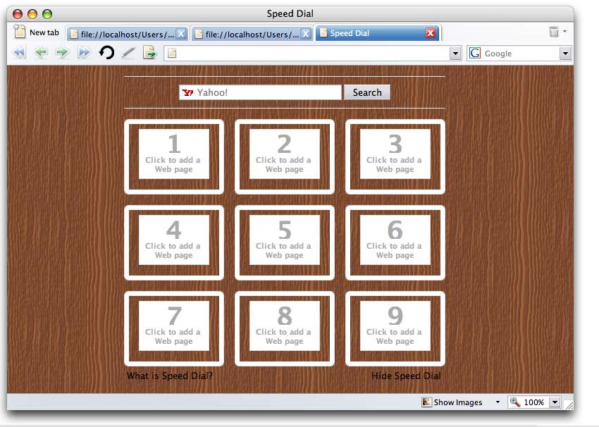Figure 7: The speed dial page with the wooden background applied.
Summary
In this article I have shown you the basics of how Opera skins work, and how to unpackage them, manipulate them by adding new images, and re-package and apply the changes to Opera. If you still have a thirst for knowledge do not despair - in the next few articles I will start to delve deeper into customizing Opera skins.
You can find a skin containing the modifications detailed in the above three Example sections in this skin zip file
This article is licensed under a Creative Commons Attribution, Non Commercial - Share Alike 2.5 license.
Comments
The forum archive of this article is still available on My Opera.
No new comments accepted.